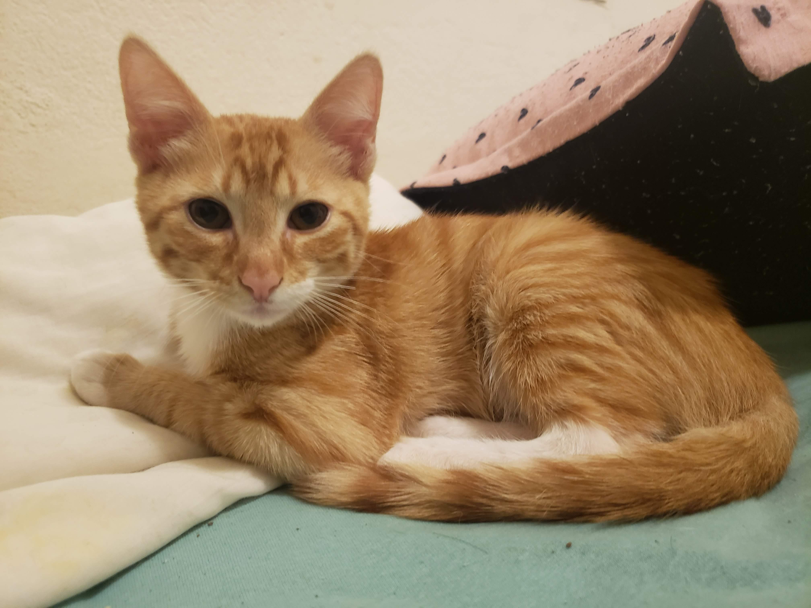
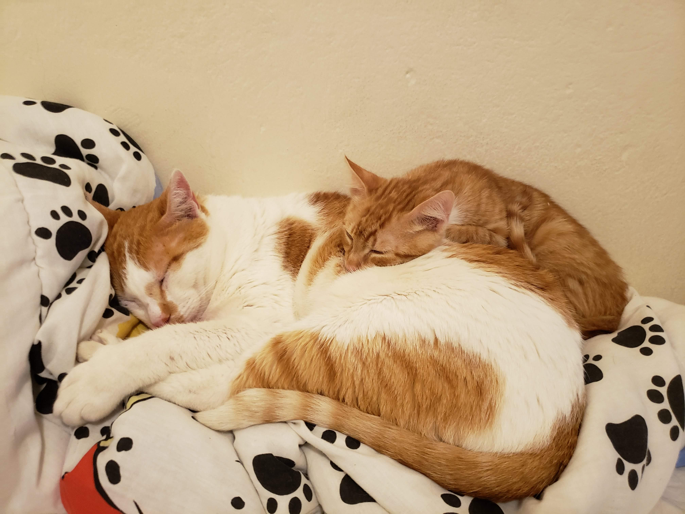
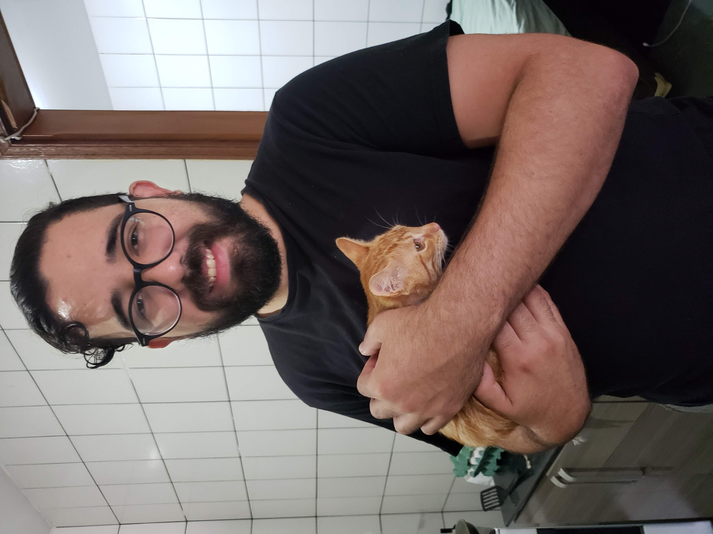

Fera
Resgatado quando tinha por volta de dois meses, o Fera recebeu esse nome porque rosnou para nós quando fomos tirá-lo da caixinha no veterinário. Apesar disso, mostrou-se o gato mais calmo da ninhada.
Não gosta de colo, mas deita ao redor de humanos e adora carinho.
Foi tratado para infecção fúngica da pele. Hoje já se encontra com seu novo dono através da adoção responsável.
← Voltar aos gatos